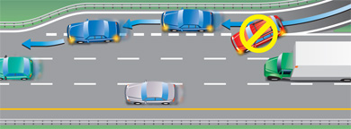
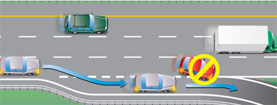

A freeway - also called an expressway - is a high-speed, multi-lane road. On a freeway, traffic going in each direction is separated and ramps let vehicles enter and exit. Vehicle speed is higher on a freeway than on other roads, so driving can be more demanding and difficult. However, because there are no intersections, bicycles or pedestrians, freeway driving can be safer for experienced drivers.
Lanes called High Occupancy Vehicle (HOV) lanes are to be used for:
- vehicles carrying at least two people
- buses
- licensed taxis
- green‑plate vehicles
- airport limousines
- motorcycles
- High-Occupancy Toll (HOT) permit holders (where permitted)
- emergency vehicles
You will need to learn how to recognize markings and signs for these lanes, and the rules for using them.
New drivers need to learn how to drive with other vehicles around them at low speeds before trying freeway driving. Class G1 drivers may only drive on freeways with a licensed driving instructor.
Entering a freeway
There are usually two parts to a freeway entrance: an entrance ramp and an acceleration lane.
As you move along the freeway entrance ramp, look ahead and check your mirrors and blind spots to assess the traffic to see where you will move into the nearest freeway lane.
As you leave the ramp you enter the acceleration lane. In the acceleration lane, drivers increase their speed to the speed of traffic on the freeway before they merge with it. Signal and increase your speed to merge smoothly with traffic. Freeway drivers should move over, if it is safe to do so, leaving room for merging vehicles.
A few entrance ramps join the freeway on the left. This means you enter the fastest lane of traffic first. Use the acceleration lane to match your speed to the traffic, increasing your speed more quickly.

Diagram 2-54
Driving along a freeway
Once on the freeway, a safe driver travels at a steady speed, looking forward and anticipating what’s going to happen on the road ahead. Traffic should keep to the right, using the left lanes for passing.
As in city driving, your eyes should be constantly moving, scanning the road ahead, to each side and behind. Look ahead to where you are going to be in the next 15 to 20 seconds, or as far ahead as you can see, when you travel at faster speeds. Remember to keep scanning and check your mirrors frequently.
Stay clear of large vehicles. Because of their size, they block your view more than other vehicles. Leave space around your vehicle. This will let you see clearly in every direction and will give you time and space to react. Learn more about following distances.
Be careful not to cut off any vehicle, large or small, when making a lane change or joining the flow of traffic. It is dangerous and illegal for a slower moving vehicle to cut in front of a faster moving vehicle.
Use the far left lane of a multi-lane freeway to pass traffic moving slower than the speed limit, but don't stay there. Drive in the right-hand lane when possible. On many freeways with three or more lanes in each direction, large trucks cannot travel in the far left lane and must use the lane to the right for passing. Get into the habit of driving in the right lane, leaving the other lanes clear for passing.
Leaving a freeway
There are usually three parts to a freeway exit: a deceleration lane for slowing down that leads drivers out of the main flow of traffic, an exit ramp and an intersection with a stop sign, yield sign or traffic light. When leaving the freeway, signal that you want to move into the deceleration lane, but do not slow down. When you are in the lane, reduce your speed gradually to the speed shown for the exit ramp. Check your speedometer to make sure you are going slowly enough. You may not realize how fast you are going because you are used to the high speed of the freeway. Losing your ability to judge your speed accurately is sometimes called speed adaptation or velocitization. It is a special danger when leaving a freeway. Be prepared to stop at the end of the exit ramp.
Signs telling you that there are freeway exits ahead are far enough in advance for you to make any lane changes safely. If you miss an exit, do not stop or reverse on the freeway. Take the next exit.

Diagram 2-55
High Occupancy Vehicle (HOV) Lane
A High-Occupancy Vehicle (HOV) lane is a specially designed lane that is designated for use by certain types of vehicles with a specified number of occupants. It can offer travel-time savings to those who choose to carpool or take transit. HOV lanes can move a greater number of people than a general traffic lane, and encourage carpooling and transit use by providing travel-time savings and a more reliable trip time. HOV lanes are open 24 hours a day, seven days a week.
HOV lanes benefit all drivers, not only those who carpool, in the following ways:
- Improves highway infrastructure by moving more people in fewer cars
- Reduces the number of vehicles on the road
- Reduces overall emissions and improves air quality
HOV lanes on provincial highways are reserved for:
- vehicles carrying at least two people
- buses
- licensed taxis
- green‑plate vehicles
- airport limousines
- motorcycles
- High-Occupancy Toll (HOT) permit holders (where permitted)
- emergency vehicles
Large trucks are not permitted on the HOV lanes, regardless of the number of occupants.
- The HOV lane is separated from the other general traffic lanes by a striped buffer zone. It is illegal and unsafe to cross the striped buffer pavement markings.
- Certain vehicles are exempt from the HOV lane rules. Buses can use an HOV lane at any time, regardless of the number of occupants. Emergency vehicles such as police, fire and ambulance are also exempt from the restrictions.
- If you use the HOV lanes improperly, you can be stopped and ticketed by a police officer. You will be required to re-enter the general lanes at the next entry/exit zone.
- Commercial motor vehicles must have two or more people in the vehicle and be less than 6.5 metres in total length to be in the HOV lane. Single-occupant taxis and airport limousines are permitted in the HOV lane. Vehicles with the “Green” licence plate are permitted in the HOV lane with any number of occupants. Green plates are available for eligible plug-in hybrid electric vehicles and full-battery electric vehicles. Please consult the Ministry of Transportation website for more details.
Summary
By the end of this section, you should know:
- What a freeway is and which road users can and cannot use them
- Safe practices to follow when entering, driving along or exiting a freeway
- What provincial freeway HOV lanes are and who can use them